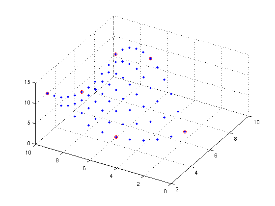

shapefunctions
| main | Tutorials | Functions | website |
Computes the shape functions for a given parametric point and element type.
Version : 1.0
Author : George Kourakos
email: giorgk@gmail.com
web : http://groundwater.ucdavis.edu/msim
Date 18-Mar-2014
Department of Land Air and Water
University of California Davis
Contents
Usage
N = shapefunctions(t, opt)
Input
t: parametric point[Np x Nt] where Np is the number of parametric points and Nt is the number of natural coordinates required to decsribe the parametric point
opt: Structure with the following fields:
dim: dimension of the element
el_type: element type (e.g. triangle, prism, etc...)
el_order: element order (e.g. linear, quadratic)
Output
N: [Np x N_sh] Matrix with the shape function values, (N_sh is the number of shape functions
Example
Lets create a quadratic triange element
p = [5.5 1.5;... 9.5 9.5;... 2.5 9.5]; p(4,:) = (p(1,:) + p(2,:))/2; p(5,:) = (p(2,:) + p(3,:))/2; p(6,:) = (p(3,:) + p(1,:))/2;
Let's also a assign a property h to the nodes of this element
h=[ 4; 7; 12; 14; 5; 2];
Next we will create a set of parametric points. The sum of parametric point coordinates must not be greater that 1 otherwise the point is outside of the element.
t=[]; for i = 0:0.1:1 for j = 0:0.1:1 if i + j <=1 t=[t;i j]; end end end
Now that we created a set of parametric points we will evaluate the shape functions
N = shapefunctions(t, struct('dim',2,'el_type','triangle','el_order','quadratic'));
Now lets plot the property h along the element
for i = 1:size(t,1) x = 0; y = 0; z = 0; for j = 1:size(N,2) x = x + N(i,j)*p(j,1); y = y + N(i,j)*p(j,2); z = z + N(i,j)*h(j); end plot3(x, y, z,'.') hold on end grid on view(-60,52) plot3(p(:,1),p(:,2),h,'or') hold off